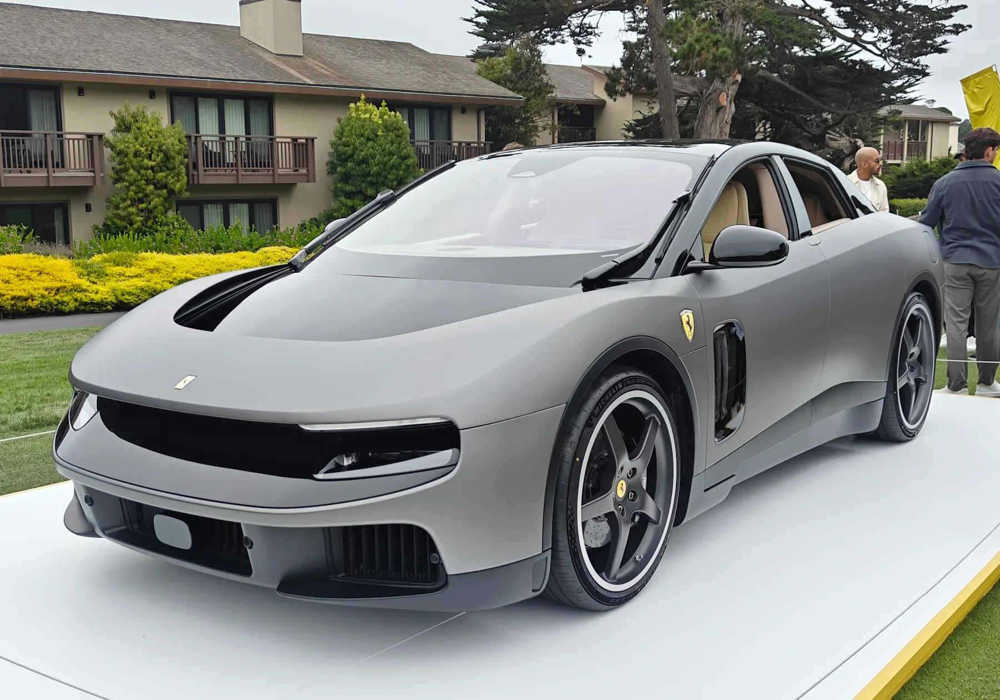
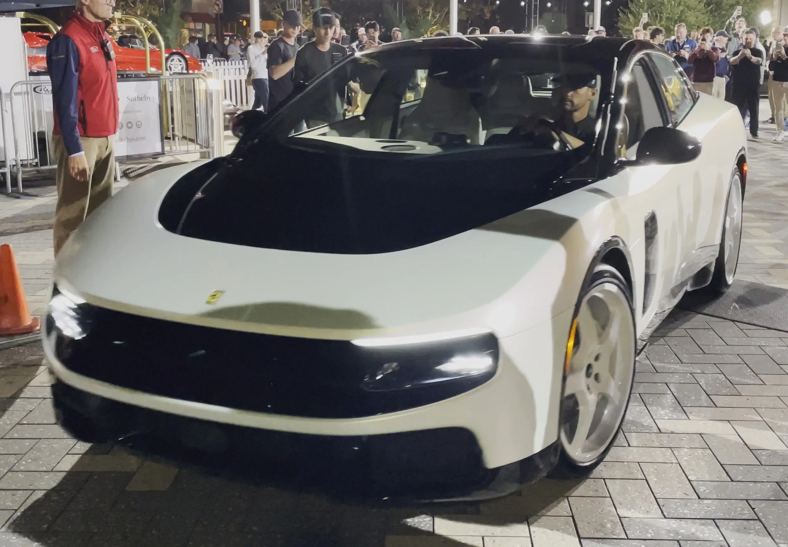
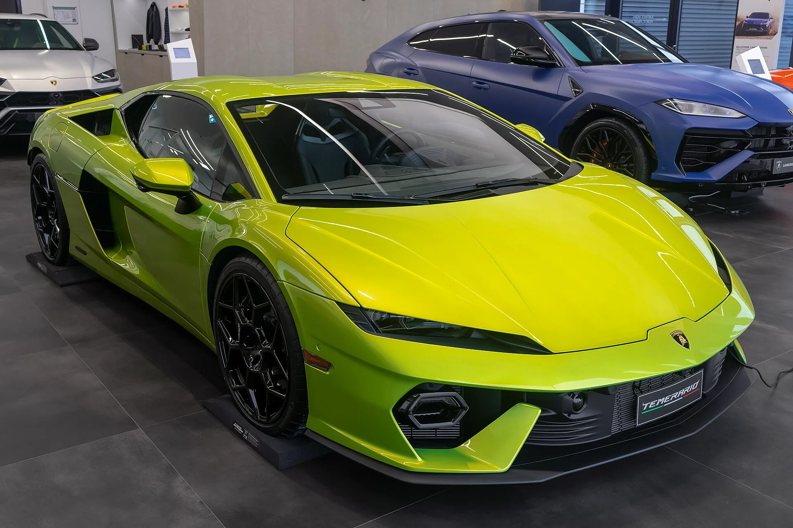

▲ 페블비치에서 공개된 페라리 루체의 전측면. 4도어 5인승 패스트백 구조를 채택한 브랜드 최초의 순수 전기 스포츠카다
1. 청담 전시장에서 열린 한국 최초 공개
페라리코리아가 브랜드 최초의 순수 전기 스포츠카 '루체(Luce)'를 서울 강남구 청담동 페라리 전시장에서 한국 최초로 공개했다. 루체는 2026년 5월 25일 이탈리아 로마에서 세계 최초로 공개된 뒤, 8월 24일 한국 무대에 처음 모습을 드러냈다. 이후 8월 26일부터 9월 13일까지 청담 전시장에서, 9월 29일부터 10월 4일까지는 부산 전시장에서 프라이빗 뷰 행사가 이어질 예정이다.
현장에서는 597리터에 달하는 트렁크 용량을 시연하기 위해 여행용 가방 5개를 동시에 싣는 퍼포먼스가 진행돼 눈길을 끌었다. 스포츠카 이미지가 강한 페라리가 실용성을 전면에 내세운 것은 이례적이라는 평가다.

▲ 2026년 몬터레이 카 위크에서 공개된 페라리 루체 섀시 0번. 매끄러운 4도어 패스트백 실루엣이 특징이다 ⓒ Wikimedia Commons
2. 최고출력 1,050마력, 0-100km/h 2.5초... 루체의 제원
루체는 네 바퀴 각각에 독립 전기모터를 배치한 사륜구동 시스템으로 시스템 최고출력 1,050cv를 낸다. 정지 상태에서 시속 100km까지 2.5초 만에 도달하며, 최고속도는 310km/h에 이른다. 122kWh 대용량 배터리를 탑재해 WLTP 기준 약 530km의 주행거리를 확보했다. 서스펜션에는 액티브 서스펜션 기술인 'ASC 3.0'이 적용돼 노면 상황에 따라 차체 자세를 능동적으로 제어한다.
| 항목 | 내용 |
|---|---|
| 구동계 | 4개 독립 전기모터, 사륜구동 |
| 시스템 최고출력 | 1,050cv |
| 배터리 용량 | 122kWh |
| 0-100km/h | 2.5초 |
| 최고속도 | 310km/h |
| 주행거리(WLTP) | 약 530km |
| 트렁크 용량 | 597리터 |
| 국내 가격 | 약 9억 7,000만원 |
📍 삼성 디스플레이가 탑재된 계기판
루체의 실내에는 삼성디스플레이의 OLED 기술이 적용된 다층 계기판이 탑재됐다. 12.9인치와 12인치 패널이 함께 구성돼 있으며, 4도어 5인승 구조를 통해 뒷좌석 탑승객도 넉넉한 공간을 누릴 수 있도록 설계됐다. 디자인은 애플 출신 디자이너들이 참여한 것으로 알려졌다.
3. "엔진을 대체하지 않는다"... 페라리의 멀티 에너지 전략
루체는 2022년 페라리 캐피털 마켓 데이(Capital Market Day)에서 예고된 '멀티 에너지 전략'의 결실이다. 페라리는 순수 전기차, 하이브리드, 내연기관을 모두 아우르는 기술 중립적 접근을 이어가겠다고 밝힌 바 있다. 즉 전기차가 기존 엔진 라인업을 대체하는 것이 아니라, 라인업을 확장하는 방식으로 전동화를 추진한다는 것이다. 전기모터부터 배터리 팩까지 핵심 부품을 내부에서 개발·생산했다는 점도 페라리가 전동화 기술 내재화에 힘을 쏟고 있음을 보여준다.
루체는 페라리 최초의 5인승 모델이라는 점에서도 의미가 크다. 기존 2도어 스포츠카 중심이었던 브랜드 라인업에, 일상적으로 활용 가능한 4도어 GT 모델이 추가된 셈이다. 관련 소식은 페라리 공식 미디어센터에서 확인할 수 있다. 바로가기

▲ V12 자연흡기 엔진을 고수하는 페라리 12칠린드리. 페라리는 전기차 루체를 내놓으면서도 내연기관·하이브리드 라인업은 그대로 유지한다는 방침이다 ⓒ Wikimedia Commons
4. 람보르기니는 전기차를 접었다... 엇갈리는 하이퍼카 브랜드들
페라리의 행보는 경쟁 하이퍼카 브랜드들과 뚜렷하게 대비된다. 람보르기니는 콘셉트카 '란자도르'로 예고했던 순수 전기차 양산 계획을 취소했다. 슈테판 빙켈만 람보르기니 CEO는 핵심 고객층이 전기차로 전환할 의향이 거의 없으며, V8·V12 엔진이 빠진 람보르기니에 대한 관심은 사실상 제로에 가깝다고 밝힌 바 있다. 대신 람보르기니는 레부엘토, 우루스 SE, 테메라리오 등 플러그인 하이브리드(PHEV) 모델로 전 라인업의 전동화를 마무리하는 쪽을 택했다.
| 브랜드 | 전동화 전략 |
|---|---|
| 페라리 | 순수 전기차(루체) 출시, 내연기관·하이브리드와 병행하는 멀티 에너지 전략 |
| 람보르기니 | 순수 전기차(란자도르) 양산 취소, PHEV로 전 라인업 전동화 완료 |
| 맥라렌 | 하이브리드 중심(아투라 등), 순수 전기차 전환 계획 재검토 가능성 |

▲ 람보르기니의 플러그인 하이브리드 모델 레부엘토. 람보르기니는 순수 전기차 대신 PHEV로 전동화 방향을 선회했다 ⓒ Wikimedia Commons

▲ 람보르기니가 최근 선보인 V8 하이브리드 모델 테메라리오. 레부엘토·우루스 SE와 함께 람보르기니 전 라인업의 PHEV 전동화를 완성하는 모델이다 ⓒ Wikimedia Commons
5. 맥라렌을 비롯한 다른 브랜드들의 선택은
맥라렌 역시 아투라 등 하이브리드 모델을 중심으로 전동화를 진행하고 있지만, 순수 전기 하이퍼카 출시에는 아직 신중한 태도를 보이고 있다. 업계에서는 람보르기니의 전기차 계획 철회를 계기로, 페라리·맥라렌·애스턴마틴 등 다른 고성능 브랜드들도 순수 전기차 전환 일정을 재검토할 가능성이 제기된다. 이런 분위기 속에서 페라리가 루체를 통해 순수 전기차 노선을 유지한 것은, 하이퍼카 시장에서 상대적으로 이례적인 결정으로 받아들여진다.

▲ 맥라렌의 하이브리드 슈퍼카 아투라. 맥라렌은 순수 전기 하이퍼카 전환에는 아직 신중한 태도를 유지하고 있다 ⓒ Wikimedia Commons
✅ 페라리 루체 한국 공개, 이것만은 확인하세요
· 8월 24일 서울 청담 전시장에서 한국 최초 공개, 이후 청담·부산에서 프라이빗 뷰 진행
· 최고출력 1,050cv, 0-100km/h 2.5초, 주행거리 약 530km, 국내 가격 약 9억 7,000만원
· 페라리 최초의 순수 전기차이자 4도어 5인승 모델, 삼성디스플레이 OLED 계기판 탑재
· 페라리는 전기차·하이브리드·내연기관을 병행하는 멀티 에너지 전략 유지
· 람보르기니는 순수 전기차 계획을 취소하는 등 경쟁 브랜드와는 상반된 행보
6. 정리
페라리 루체의 한국 공개는 단순한 신차 출시를 넘어, 하이퍼카 브랜드들이 전동화 앞에서 엇갈린 선택을 하고 있음을 보여주는 상징적 장면이다. 람보르기니가 순수 전기차 계획을 접고 하이브리드로 방향을 선회한 반면, 페라리는 내연기관·하이브리드 라인업을 유지하면서도 루체를 통해 순수 전기차 노선을 함께 걸어가기로 했다. 1,050마력의 성능과 4도어 5인승이라는 파격을 동시에 갖춘 루체가 국내 하이퍼카 시장에서 어떤 반응을 이끌어낼지 주목된다.